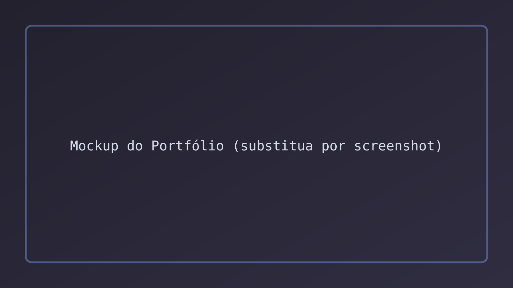
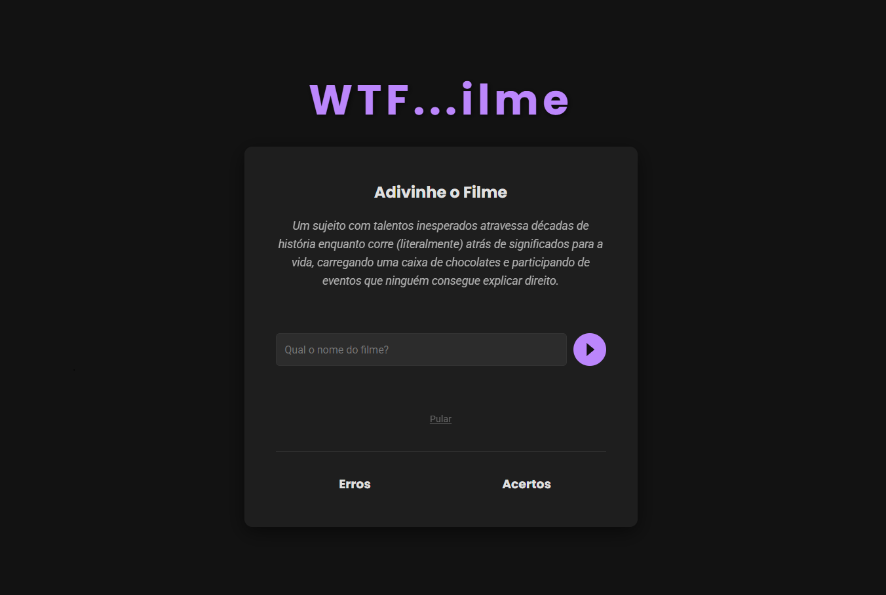
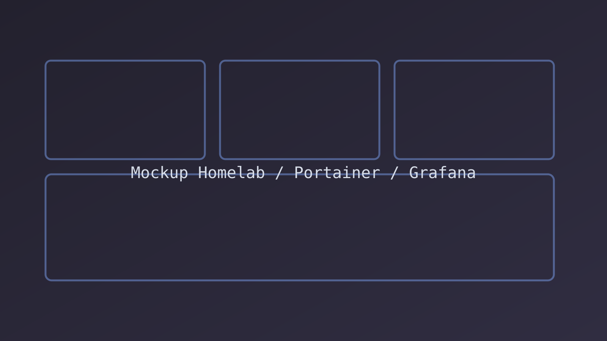
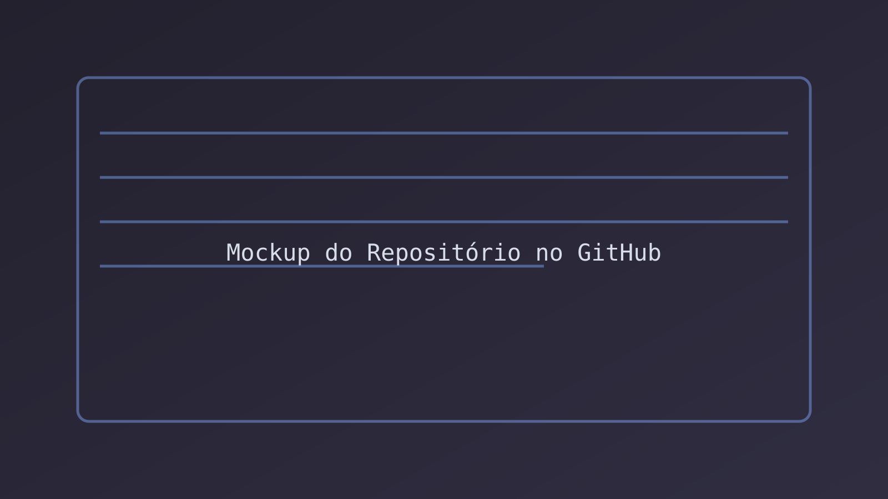
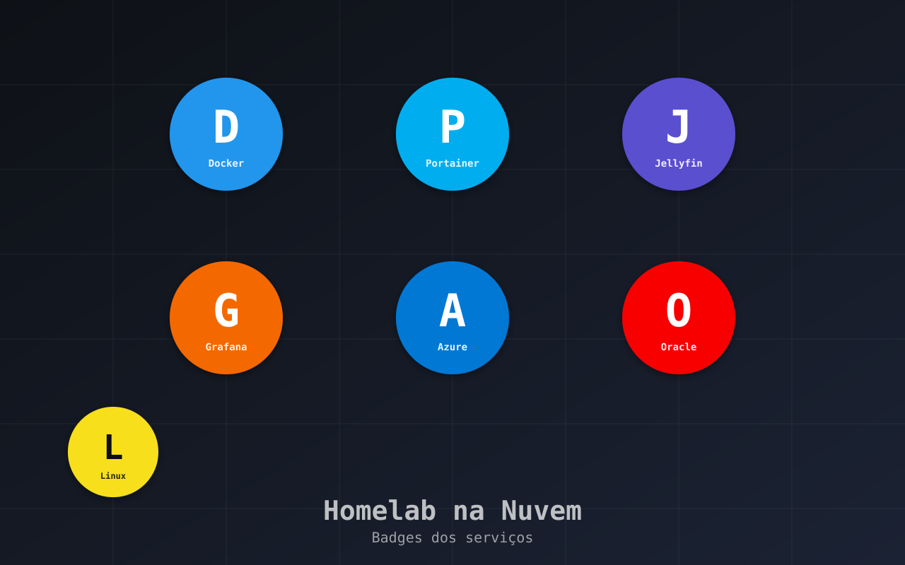

Sites e Sistemas Sob Medida
Crio sites e sistemas fáceis de usar, que funcionam bem no computador e no celular. Do visual ao funcionamento, entrego tudo pronto para usar.

Meu portfólio feito do zero com ajuda de IA, leve e otimizado.
Este site, do conceito à publicação, é ao mesmo tempo um projeto prático e um manifesto pessoal sobre meu lugar como engenheiro de software na era da Inteligência Artificial.
A totalidade do código — HTML, CSS e JavaScript — nasceu de uma colaboração direta com assistentes de IA de ponta (Gemini 2.5 Pro, Claude 4 Sonnet e o preview do GPT‑5). Dito isso, essa colaboração foi conduzida na contramão do “vibe coding”.
Não terceirizei o raciocínio nem aceitei código sem questionamento, cada bloco começou por prompts detalhados e seguiu com revisão crítica, refatoração e integração manual.
Tratei a IA como um “pair programmer” sênior, alias, quem melhor para instruir/ajudar alguém se não as maiores e mais sofisticadas ferramentas disponíveis? Um parceiro de brainstorming incansável que acelera o que é mecânico e repetitivo é tudo que todos sempre sonhamos em ter, também não negligenciei a arquitetura, a experiência do usuário ou a intenção por trás de cada elemento.
Confesso que me incomoda ver esse potencial ser, às vezes, subutilizado em debates rasos, perde-se a chance de aplicar IA para resolver problemas genuinamente complexos, otimizar sistemas (até os não "computacionaveis") e — como aqui — ampliar e acelerar o aprendizado humano.
Sem juízo sobre como cada um escolhe usar a ferramenta: IAs existem para muitos propósitos. A minha filosofia é que a verdadeira revolução não está em pedir que a IA pense por mim, e sim em usá-la para me ajudar a pensar melhor e construir com mais eficiência.
Por fim, este projeto foi um exercício profundo de "engenharia de prompt" (não vou entrar em detalhes do que eu acho desse conceito): transformar uma visão em instruções claras para um modelo e manter a disciplina de entender, testar e assumir o código como meu.

Jogo online: adivinhe o filme por sinopses criadas por IA.
É um jogo em que você tenta adivinhar o filme a partir de uma sinopse criada por IA. você pode acessar clicando aqui (aguarde 60 segundos, é o tempo que a plataforma leva para "ligar" o servidor, são os males dos planos gratuitos, mas esta em pleno funcionamento)
Eu estava navegando pela internet, quando achei o site artigo.app em algum post aleatorio no reddit, e fiquei horas com meus amigos online, tentanto adivinhar palavras, foi quando eu pensei, "Eu adorei isso, eu acho que eu consigo fazer algo parecido" mas simplesmente copiar a ideia é algo que iria de contra a minha indole, dai eu fui atrás de fazer o meu proprio joguinho para poder me entreter e entreter meus amigos em uma call no discord, mas precisava ser simples o suficiente para rodar em um navegador, e não tão intrusivo a ponto de ter que instalar algo em um pc ou mais um app de celular, e já falando em celular, foi com um, em cima de uma toalha, em um "piquenique noturno" em um sabado qualquer (ou era sexta, não lembro direito) que eu tive a melhor experiência possível com esse joguinho
Por trás, uso ferramentas modernas no servidor e no site, além de uma IA para gerar as sinopses e um serviço de hospedagem para publicar.

Busca eventos no Sympla e mostra tudo em um painel simples.
Ferramenta que busca eventos no Sympla, organiza e mostra tudo em um painel simples para explorar.
Navegando por plataformas de freelancers, acabei vendo o anuncio de um projeto que me chamou bastante atenção, queriam uma aplicação que buscasse eventos do Sympla, filtrasse por tipo e estilo, e mostrasse tudo em uma página fácil de usar, e eu já passei por uma necessidade um pouco parecida com uma amiga minha, então eu fui lá e desenvolvi essa tal aplicação que o anuncio pedia... não chegaram a me responder, mas esta aqui, e esta funcional.
Feita em Python com páginas geradas no servidor, consulta os dados do Sympla, grava em banco de dados e pode ser empacotada para rodar com facilidade.
Assistente virtual no navegador; base para criar bots sob medida.
Assistente virtual simples que conversa no navegador usando uma IA de texto, serve de base para criar bots sob medida, você pode acessar a demo clicando aqui.
Esse foi por conta de uma ideia que um amigo meu veio me sugerir, "e se a gente fizesse um bot pra atender os estabelecimentos aqui de (insira o nome do seu bairro)" Pois bem, o "a gente" virou só eu, mas tudo bem, meu amigo tinha outras prioridades, mas o lado bom é que esta funcional, só esperando por um lugar para ser implementado (a versão de teste dele, ele atende por uma empresa ficticia chamada "tralhotec" que oferece serviços em nuvem)
Feito em Python com páginas web e integração com IA; há uma demo publicada para testar.

Guia comparativo com exemplos lado a lado e passo a passo de início.
Guia com exemplos e dicas de início para várias linguagens de programação, foco em praticidade e consulta rápida.
Pois bem, talvez o projeto que eu mais goste, ou mais considere como meu "filho", meu foco é python, mas em meus tempos de ensino medio, eu brincava com HTML/CSS e javascript, então eu pensei em rever o que eu sabia, e conincidentemente, C e PHP entraram na minha grade do curso de engenharia de software, então eu fiquei maluco, "como é que eu vou estudar 4 linguagens de programação diferentes?", mas eu li um trecho muito bom no exelente livro "Codigo Limpo" (que você pode encontrar aqui: https://amzn.to/4lvyQOk) e tive uma epifania, um engenheiro é alguém que mexe com a egenhosidade de algo, e isso independe de onde ela vem, um engenheiro da chevrolet, não é especialista em um carro da fiat, mas com certeza ela saberia onde procurar por problemas x ou y no carro que ele não conhece, e porque não o mesmo em linguagem de programação? Eu não preciso ser um especialista em C#, mas pelo menos saber como são declaradas as variaveis nessa linguagem, talvez possa me dar uma noção do problema que algum colega meu possa estar passando, e melhor ainda, pode me dar propriedade suficiente para explicar para alguém que esta começando nessa área, a escolher ou não uma certa linguagem.

Servidor pessoal na nuvem com mídia e ferramentas, tudo organizado em um painel.
Meu ambiente pessoal na nuvem: organizei filmes, músicas, e serviços do dia a dia, com um painel para acompanhar e administrar tudo de maneira simples.
Já tem muitos anos que acompanho canais de tecnologia no youtube, mas mais especificamente estou falando do canal Diolinux (Recomendo fortemente), e apesar do canal ter o nome bem sugestivo em relação a linux, é um canal de tecnologias no geral, e algumas vezes eu vejo ele trazendo esses tais "homelabs" que nada mais são que, sem querer ser redundante mas já sendo, laboratorios caseiros, imagine querer tester uma distro linux, onde você faria isso? Uma maquina virtual talvez, mas todas as camadas de emulação nunca vão nos dar uma noção real do que seria usar esse algo nativamente, mas eu estava limitado a ter que gastar com algum computador secundario, foi quando eu tive a ideia de testar o que eu posso fazer em serviços em nuvem, foi quando eu implementei diversos serviços em VM's da azure e oracle, que nos serviços gratuitos, já atendem tudo, ou pelo menos grande parte, das coisas que eu gostaria de testar
Crio sites e sistemas fáceis de usar, que funcionam bem no computador e no celular. Do visual ao funcionamento, entrego tudo pronto para usar.
Deixo seu sistema online com segurança e estabilidade (Azure/Oracle Cloud). Faço atualizações sem parar o serviço e monitoro para ficar sempre disponível.
Levo inteligência artificial para o seu produto: assistentes, busca mais esperta e automações que economizam tempo e dinheiro, sem complicar a experiência.
Um resumo das tecnologias que mais uso no dia a dia.
Minha jornada no mundo da tecnologia começou muito antes de eu se quer conhecer um computador, meu avô, que era eletricista industrial e nas horas vagas consertava eletrônicos, foi na oficina dele que eu despertei a curiosidade em saber como as coisas funcionam. Aprendi na prática a lógica e funcionamento de um circuito impresso, muitas das vezes mais quebrando do que ajeitando algo, mas acho que é sempre assim que começamos (e eu era criança), essa base no hardware, um dia se solidificou com um curso de eletrotécnica, o que me deu uma perspectiva única sobre a interação entre o físico e o digital, e não muito tempo depois, um curso de TI para abrir de vez as portas do mundo digital para mim. Hoje, como estudante de Engenharia de Software, levo essa mentalidade para o mundo do código. Ainda tenho uma extrema curiosidade de entender como as coisas funcionam por baixo dos panos, seja configurando um ambiente dual-boot com Linux e Windows, ou explorando os detalhes de múltiplas linguagens de programação.
Acredito que a melhor forma de aprender algo é enfrentando desafios, e creio que meus projetos são um reflexo dessa filosofia.
Competências independentes do meu trabalho em software.
Estou sempre aberto a novas oportunidades e colaborações. Sinta-se à vontade para entrar em contato.